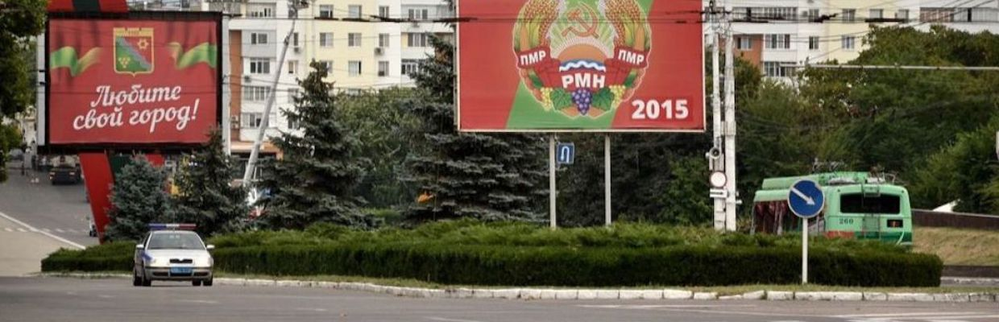
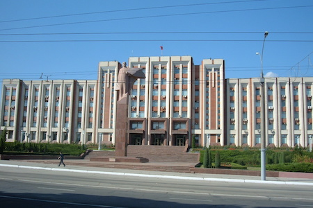
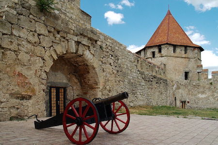
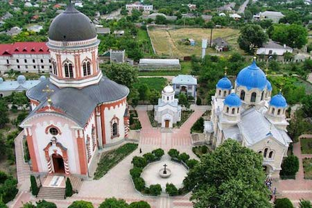
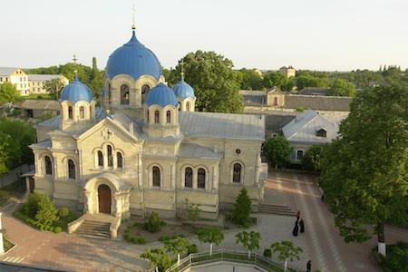
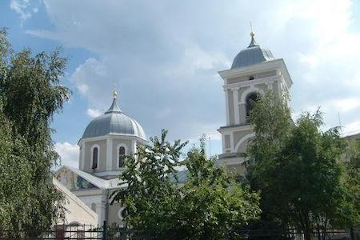
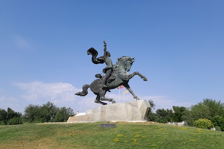
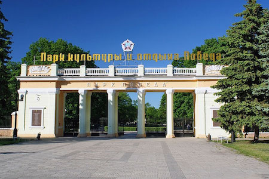
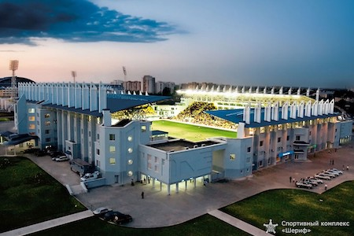
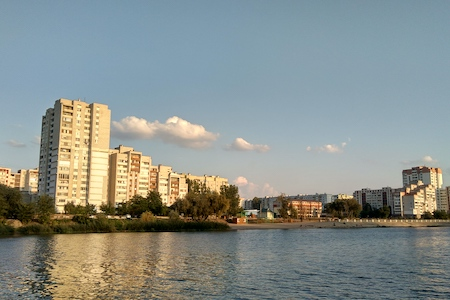

Regiunea transinstreană

Regiunea transnistreană este o zonă unică situată în estul Republicii Moldova, de-a lungul râului Nistru. Cu un statut politic aparte, aceasta oferă o experienţă diferită faţă de restul ţării. Oraşe precum Tiraspol şi Bender impresionează prin arhitectura şi atmosfera cu influenţe sovietice. Străzile şi monumentele creează senzaţia unei călătorii în timp. Populaţia este diversă, iar cultura locală îmbină influenţe moldoveneşti, ruse şi ucrainene. Limba rusă este cea mai utilizată în viaţa de zi cu zi. Regiunea atrage vizitatori prin autenticitatea şi specificul său aparte. Este o destinaţie interesantă pentru cei care vor să descopere o altă faţă a Moldovei.
Explorează locaţiile din Regiunea transnistreană
Tiraspol

Tiraspol este capitala neoficială a regiunii transnistrene şi cel mai important centru urban al zonei. Oraşul este cunoscut pentru atmosfera sa aparte, unde trecutul sovietic este încă foarte prezent prin monumente, clădiri şi simboluri publice. Străzile largi, pieţele mari şi ordinea urbană creează o senzaţie de oraş diferit faţă de cele obişnuite din Europa de Est. În acelaşi timp, viaţa de zi cu zi este activă, cu cafenele, pieţe şi locuri de relaxare frecventate de localnici. Tiraspol este o destinaţie interesantă pentru oricine vrea să descopere o cultură unică şi o atmosferă care pare "în afara timpului".
Cetatea Bender

Cetatea Bender este una dintre cele mai importante şi impresionante atracţii istorice din Transnistria. Construită în secolul al XVI-lea de Imperiul Otoman şi ulterior modificată de ruşi, fortăreaţa are o istorie complexă şi fascinantă. Poziţionată strategic pe malul Nistrului, cetatea oferă privelişti frumoase şi o atmosferă medievală bine păstrată. Vizitatorii pot explora zidurile groase, turnurile şi curţile interioare, descoperind detalii despre rolul său militar de-a lungul secolelor. Este un loc perfect pentru pasionaţii de istorie, arhitectură şi fotografie.
Bender

Oraşul Bender este unul dintre cele mai vechi oraşe din regiune şi are o importanţă istorică semnificativă. De-a lungul timpului, a fost influenţat de mai multe imperii şi culturi, ceea ce se reflectă în arhitectura şi structura sa urbană. Atmosfera oraşului este una liniştită, dar plină de istorie, cu clădiri vechi şi zone care păstrează urmele trecutului. Bender este cunoscut şi pentru evenimentele istorice importante care s-au desfăşurat aici, ceea ce îi oferă o identitate aparte. Este un oraş care merită explorat pentru a înţelege mai bine regiunea transnistreană.
Mănăstirea Noul Neamţ

Mănăstirea Noul Neamţ este unul dintre cele mai importante centre spirituale din Transnistria şi un loc de linişte profundă. Complexul monahal impresionează prin arhitectura sa frumoasă, bisericile bine păstrate şi curtea spaţioasă înconjurată de natură. Este un loc în care vizitatorii pot simţi o atmosferă de calm şi reculegere, departe de agitaţia oraşelor. De asemenea, mănăstirea are o mare valoare religioasă şi istorică pentru comunitatea locală. Este o destinaţie ideală atât pentru pelerini, cât şi pentru turişti interesaţi de cultură şi spiritualitate.
Catedrala Schimbarea la Faţă

Catedrala Schimbarea la Faţă din Bender este un important lăcaş de cult ortodox, cu o arhitectură elegantă şi impunătoare. Interiorul său este simplu, dar foarte bine organizat, oferind o atmosferă liniştită şi solemnă. Catedrala joacă un rol central în viaţa religioasă a comunităţii locale şi este frecvent vizitată de credincioşi. Exteriorul clădirii atrage atenţia prin detalii arhitecturale clasice şi o prezenţă vizuală puternică. Este un loc care completează perfect explorarea oraşului Bender.
Monumentul lui Suvorov

Monumentul lui Suvorov este unul dintre cele mai cunoscute simboluri ale Tiraspolului şi un punct central al oraşului. Amplasat într-o zonă deschisă şi vizibilă, monumentul impresionează prin dimensiunea sa şi prin poziţionarea dominantă în spaţiul urban. Este dedicat generalului Alexandr Suvorov, considerat fondatorul oraşului. Locul este foarte frecventat atât de turişti, cât şi de localnici, fiind un punct popular pentru fotografii. Monumentul reprezintă o parte importantă din identitatea istorică a regiunii.
Parcul Pobeda

Parcul Pobeda este unul dintre cele mai mari şi mai cunoscute parcuri din Tiraspol, fiind un loc important de relaxare pentru localnici. Aici oamenii vin pentru plimbări, sport, timp petrecut cu familia sau pur şi simplu pentru a se bucura de natură. Parcul este bine întreţinut, cu alei largi, spaţii verzi şi zone de odihnă. Atmosfera este calmă şi prietenoasă, oferind un contrast plăcut faţă de zonele urbane mai aglomerate. Este un loc excelent pentru a observa viaţa cotidiană a oraşului.
Stadionul Sheriff

Stadionul Sheriff este un complex sportiv modern, considerat unul dintre cele mai bine dotate din regiune. Aici joacă echipa Sheriff Tiraspol, una dintre cele mai cunoscute echipe de fotbal din Moldova şi Europa de Est. Stadionul impresionează prin infrastructura sa modernă şi prin nivelul ridicat de organizare. Chiar şi pentru cei care nu sunt fani ai fotbalului, locul este interesant datorită dimensiunii şi aspectului său contemporan. Este un simbol al contrastului dintre modern şi tradiţional în Transnistria.
Rîbniţa

Rîbniţa este un oraş industrial situat pe malul Nistrului, cu o atmosferă autentică şi mai puţin turistică. Oraşul este cunoscut pentru zona sa industrială, dar şi pentru peisajele naturale din jur, care oferă un contrast interesant. Viaţa aici este mai liniştită şi reflectă o imagine realistă a regiunii. Vizitatorii pot descoperi un oraş simplu, dar cu o identitate locală puternică. Este o destinaţie potrivită pentru cei care vor să vadă Transnistria dincolo de zonele turistice.